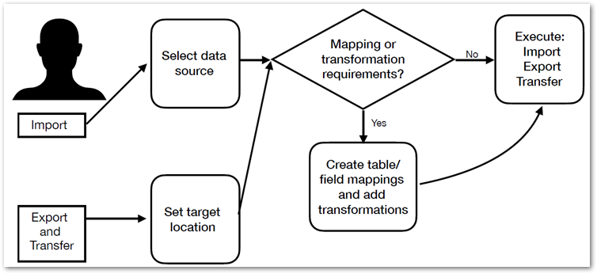

The TIBCO EBX® Data Exchange Add-on (New) enables integration and transformation of data from one data store to another. The current version of the add-on can:
Import and export data between tables in your TIBCO EBX® repository and external files.
Transfer data between tables within your EBX® repository.
Import and export data between tables in your EBX® repository and SQL databases.
When requirements between your data source and target differ, you can use the add-on's transformation functions to reconcile the differences. These transformations provide the flexibility to change data values and convert data format between sources and targets. For example, a source might use the following codes for states 1, 2, 3, etc. But, the target expects Alabama, Alaska, and Arizona. You can use a transformation to populate the target with the expected value.
As a business user you interaction with the add-on likely includes the tasks outlined in the following image:
Where you access data integration services determines the source for exports and targets for imports.

The following table outlines the topics covered in the documentation sections:
Importing | For an introduction to the import process, see Import overview. For instructions on importing, see Importing to a table. |
Exporting | For an introduction to the export process, see Export overview. For instructions on exporting, see Exporting a table. |
Data transfer | For an introduction to the transfer process, see Transfer overview. For instructions on transferring data, see Transferring to a table. |
Mapping and transformations | Map and transform overview provides a look at how the add-on implements the concepts of mappings and transformations. Mapping interface reference highlights the user interface used for mapping and transformation tasks during data integration. Additionally, it provides an example of using a transformation function. You can refer to Transformation function reference to see a list and description of the add-on's built-in transformation functions. |